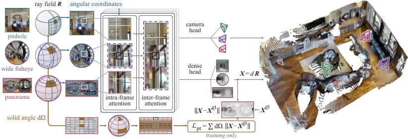
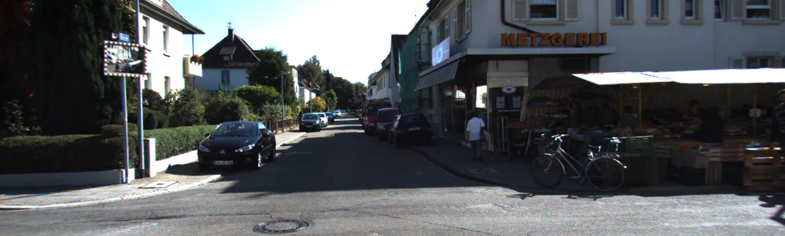
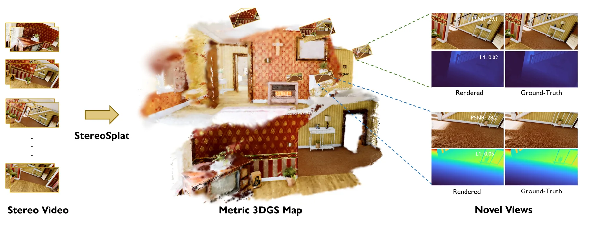

新论文 · 日期 2026-10-28 · score 22 · S层 · Geometry Foundation Models / 3D Foundation Models · cs.CV, cs.GR
内容级别：完整单篇海报
作者：Da Li, Yihan Zang, Ivan Viola, Zeyu Wang, Dominik Engel
评分 20/10
单目高斯 SLAM流式 3D 基础模型直接深度残差ORB-SLAM3位姿估计虚拟 RGB-D
一句话工作总结：把流式 3D 基础模型的深度当测量、位姿交给显式求解器：在 Oxford Spires 上 ATE 从骨干相机头的 5.98 m 降到 0.738 m，PSNR 26.35 dB，7-Scenes 上 PSNR 24.48 dB 比 Photo-SLAM 高 2.57 dB；代价是依赖 ORB 特征，无回环、无动态场景处理。
单目 RGB 高斯泼溅 SLAM 在有限优化预算下很难同时保证重建质量与相机跟踪的响应速度。该文把冻结的流式 3D 基础模型当作虚拟 RGB-D 传感器，由它提供单目深度，再用显式几何求解器通过特征重投影估计相机运动，最后用流式高斯建图器把观测整合成稠密场景表示。作者指出，直接使用基础模型回归的相机位姿会造成跨帧错位，因此在 ORB-SLAM3 框架内把 ORB 特征与预测深度联合约束位姿，用常数相对误差模型（ε=…
Achieving high-quality reconstruction and responsive camera tracking remains challenging for monocular RGB Gaussian splatting SLAM under a limited optimization budget. We present an online system that addresse…

新论文 · 日期 2026-10-28 · score 19 · S层 · Geometry Foundation Models / 3D Foundation Models · cs.CV
内容级别：完整单篇海报
作者：Jingong Chen, Qingwen Zhang, Youming Deng, Chulwoo Pack, Olaf Wysocki, Boris Jutzi, Kwanghee Won, Kyle Gao
评分 19/10
几何基础模型中心相机射线场旋转位置编码立体角加权全景/鱼眼重建
一句话工作总结：把「patch 索引 = 空间方向」这条针孔假设换成「patch 射线角 = 空间方向」：角度坐标重写 RoPE、立体角重写点损失权重，一套权重覆盖 8 种训练相机、13 种测试相机。室内全景 Acc 0.054 m（π³ 0.414）、AUC@15 94.5%（π³ 3.5），室外全景 0.663 m；代价是必须给定标定射线场，且位姿提升换来深度精度下降（log10 深度误…
几何基础模型能从一组图像前馈恢复相机位姿与稠密几何，但它们默认输入是针孔图像——这个假设不仅在输入层，也埋在骨干里：位置编码与训练损失都把图像位置绑定到空间方向，而这两者都依赖镜头。Any3R 把二者都改成以稠密射线场为条件：每个像素的单位方向构成射线场，可描述任意中心相机，无需镜头类型、畸变系数或视场角上界。角度坐标让旋转位置编码读取每个 patch 的实测射线角，立体角加权让点损失按像素在球面上覆盖的面积缩放，…
Geometry foundation models recover camera poses and dense geometry from a set of images with a feed-forward network, but they expect pinhole images. That assumption is inside the backbone too: the positional e…

新论文 · 日期 2026-10-28 · score 10 · S层 · Geometry Foundation Models / 3D Foundation Models · cs.RO
内容级别：完整单篇海报
作者：Era AI Lab Team, Jianhao Lai, Zhihao Zhan, Zhiquan Liao, Qichang Li, Shubin Chen, Zhiyuan Liu, Hongsen Lei, Jianman Lin, Xiaoxin Lin, Ke Gong, Baiyue Gu, Shiming Chen, Junlin He, Longqi Yang, Junrong Xiao, Haolin Luo, Xiaojuan Su, Jianfeng Li, Yu Luo, Xu Sun, Likui Zhang, Jusheng Zhang, Qinhan Lyu, Tianshui Chen, Liang Lin, Guangrun Wang
评分 18/10
世界-动作模型三维基础模型未来几何预测VGGT-Ω流匹配策略具身预训练
一句话工作总结：把 VGGT-Ω 从「重建当前场景」改成「预测动作块结束时刻的深度/点图/相机」，并与流匹配动作专家联合全参数优化：2.32B 参数、无具身预训练即达 RoboTwin 89.90%/50.09%，未来几何监督比当前几何监督平均高 7.93 个百分点，比不加几何高 9.43 个百分点。
世界-动作模型（WAM）为具身智能提供了有前景的框架，但主流做法仍以视频基础模型或视觉语言模型为中心。即便引入 VGGT 这类三维模型抽取的几何特征，这些特征通常也只是送进视频模型或 VLM 作为辅助输入或预测目标，三维几何并未成为世界建模的原生基础。E0.5 直接把三维基础模型当作主干，让几何成为世界建模与动作预测的共同表示；同时显式预测未来的三维状态与动作，从而捕捉超越「只预测动作」或「只预测未来视频」的几何世…
World-action models (WAMs) offer a promising framework for embodied intelligence, yet mainstream approaches remain centered on video foundation models or vision-language models. Even when geometric features ex…

新论文 · 日期 2026-10-28 · score 11 · A层 · Robotic Foundation Models / VLA · cs.RO, cs.AI, cs.LG
内容级别：半海报
作者：Jiayi Luo, Yang Zhang, Liliang Chen, Nan Wang, Chen Gao, Boxiang Qiu, Zhuoxuan Li, Baorui Peng, Chuankang Li, Yuxiang Yan, Si Liu, Qingyun Sun, Shuicheng Yan, Maoqing Yao, Jianxin Li, Guanghui Ren
评分 17/10
世界模型经验回溯蒙特卡洛树搜索反事实监督策略改进真机强化学习
一句话工作总结：用「可回卷的世界模型 + MCTS 分叉 + 子树结果当相对价值」替代前向 rollout 与独立价值网络：块抽取 69.33%、抛球 40.00%、桌面冰壶 64.44%，平均 57.93% 比 RISE 同世界模型高 11.21 个百分点；冻结世界模型或改用单条 rollout 奖励，成功率分别掉到 64.67% 与 59.33%。
以动作为条件的世界模型为策略改进提供了可扩展的替代方案，但现有方法大多把世界模型当成只能向前推演的物理环境代理，浪费了一项物理环境本身不具备的能力：倒回到过去的决策点、探索反事实的未来。Rollback 把世界模型从被动模拟器变成反事实引擎：回溯到关键决策点、分叉出替代动作、对比其结果，从而把成败归因到具体决策，并把反事实结果蒸馏成动作级监督而不额外学习价值模型。作者还构建了统一分布式世界模型搜索与异步真机执行的训…
Action-conditioned world models offer a scalable alternative to costly real-world interaction for improving robot policies. However, existing world-model-based methods largely treat world models as forward-onl…

新论文 · 日期 2026-10-28 · score 8 · A层 · Robotic Foundation Models / VLA · cs.RO
内容级别：半海报
作者：Vieri N. Akustia, Bin Hu
评分 15/10
导航 VLA事件触发调度指令复用持续预测推理加速NaVILA
一句话工作总结：不换策略、不改动作空间，只在「基座会不会改口」这件事上做二分类：VLA 调用 75.9→68.7 次/集、估计时延 41.5→38.2 s，SR 53.1%（基线 53.0%）、与基线动作序列完全一致率 92.1%；相比 FlashTrigger 多省 3.3 次调用但一致率从 97.5% 降到 92.1%。
导航视觉-语言-动作（VLA）策略即使在下一步指令不变时也会反复调用昂贵的语义推理。复用上一条指令能省算力，但可能漏掉依赖指令的转弯或停止。ASPEN 提出一种基于「指令持续性预测」的事件触发调度器：估计冻结的基座策略是否会重复上一条指令。一个轻量多模态预测器融合时序观测、语言指令、执行历史与缓存的 VLA 置信度；在可复用的指令边界上，若预测持续性足够高就复用指令，否则触发 VLA 重新推理。在冻结 NaVILA…
Navigation vision-language-action (VLA) policies repeatedly invoke costly semantic reasoning even when the next command remains unchanged. Command reuse can reduce computation but risks missing instruction-dep…

新论文 · 日期 2026-10-28 · score 17 · B层 · Neural Rendering / 3DGS / NeRF · cs.RO
内容级别：简报式摘要
作者：Ziang Guo, Didar Seyidov, Yixiao Zhou, Xuefeng Zhang, Ali Alridha Abdulkarim, Chen Min, Zufeng Zhang, Dzmitry Tsetserukou
评分 17/10
3DGS SLAM单目室外度量先验射线条件化KITTIWaymo
一句话工作总结：用「块级度量先验」替代逐帧 2D–3D 关联，让跟踪与建图共享同一个几何源：KITTI 11 序列平均 ATE 6.24 m（GigaSLAM 在多条序列 OOM）、平均 PSNR 22.70 dB，Waymo 9 序列平均 ATE 0.63 m；代价是依赖流式深度/几何模型与 200 帧块长，块长升到 300/500 帧 ATE 从 1.49 涨到 1.92/2.42 m。
单目室外导航需要稳健的相机运动估计与稠密可导航地图，三维高斯泼溅 SLAM 通过显式可微参数化与闭式投影承担这一任务。但典型做法靠 2D 像素与 3D 点的关联来恢复几何，模块化 SLAM 系统会把跟踪误差吸收进地图，导致级联退化。SG²SLAM 把流式空间几何与射线条件化的三维高斯核耦合起来：流式空间几何用块级度量先验替代逐帧跨维对应，同时监督跟踪与建图；射线条件化核给每个基元增加一个视角方向子空间，用来感知单目…
Monocular outdoor navigation requires robust camera motion estimation and a dense, navigable map, where 3D Gaussian Splatting SLAM serves this task through an explicit differentiable parameterization and close…

新论文 · 日期 2026-10-28 · score 13 · B层 · Neural Rendering / 3DGS / NeRF · cs.GR, eess.IV
内容级别：简报式摘要
作者：Vladimir Yugay, Denis Rozumny, Theo Gevers, Elias Vansteenkiste, Martin R. Oswald, Diogo C. Luvizon
评分 13/10
立体视觉度量尺度前馈高斯泼溅视差数据集新视角合成
一句话工作总结：用冻结的立体匹配基础模型提供度量视差，再解码成高斯：Infinigen 上 AbsRel 0.03、δ1 98.6%（DepthSplat 0.21/63.0），KITTI 零样本 AbsRel 0.04、PSNR 25.2 dB（DepthSplat 0.13/22.1）；自适应体素聚合把压缩率提到 1.6×，代价是需要标定双目基线。
该文提出 StereoSplat，一个专为立体视频设计的前馈三维高斯泼溅架构，目标是可靠、度量尺度的新视角合成。与忽略双目特性的单目方法不同，StereoSplat 采用原生立体架构，从基础立体骨干提取稠密多尺度潜特征与视差，送入专用高斯解码器；解码器用跨视角特征融合与门控深度精化，把表示直接翻译成逐像素三维高斯。为解决重叠视角下逐像素预测的高冗余，作者提出可学习的深度自适应聚合，在逆深度空间聚类并聚合基元。为支撑…
We present StereoSplat, a feed-forward 3D Gaussian Splatting architecture designed explicitly for stereo videos to achieve reliable, metric-scale novel-view synthesis. Unlike monocular approaches that neglect…